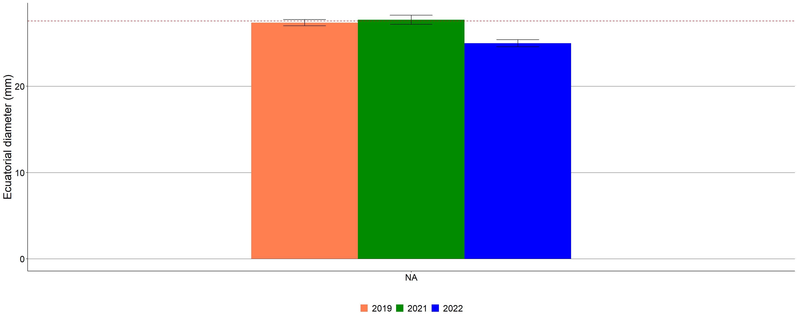

Morphological
## Error in `$<-`:
## ! Assigned data `as.numeric(fisico$pss)` must be compatible with existing data.
## ✖ Existing data has 1166 rows.
## ✖ Assigned data has 0 rows.
## ℹ Only vectors of size 1 are recycled.
## Caused by error in `vectbl_recycle_rhs_rows()`:
## ! Can't recycle input of size 0 to size 1166.Average fruit
## variable means
## 1 Fresh fruit weight 9.76132384
## 2 Dry fruit weight NA
## 3 Dry seed weight NA
## 4 Dry pulp weight NA
## 5 Dry pulp/fresh fruit weight (%) 3.40740390Maturity index
## site phenotype N indmad sd se ci
## 1 Concordia 154 4 0.3611 0 0 0
## 2 Concordia 156 4 0.4722 0 0 0
## 3 Concordia 161 4 0.3889 0 0 0
## 4 Concordia 171 4 0.6111 0 0 0
## 5 Concordia 174 4 0.5278 0 0 0
## 6 Concordia 175 4 0.1667 0 0 0
## 7 Concordia 178 4 0.0909 0 0 0
## 8 Concordia 185 4 0.3636 0 0 0
## 9 Concordia 193 4 0.3889 0 0 0
## 10 Concordia 197 4 0.4444 0 0 0
## 11 Concordia 198 4 0.8889 0 0 0
## 12 Concordia 199 4 0.7778 0 0 0
## 13 Concordia 208 4 0.5278 0 0 0
## 14 PN El Palmar 260 4 0.5278 0 0 0
## 15 PN El Palmar 261 4 0.5185 0 0 0
## 16 PN El Palmar 262 4 0.3333 0 0 0
## 17 PN El Palmar 268 4 0.7778 0 0 0
## 18 PN El Palmar 271 4 0.5556 0 0 0
## 19 PN El Palmar 272 4 0.6667 0 0 0
## 20 PN El Palmar 274 4 0.5000 0 0 0
## 21 PN El Palmar 276 4 0.6389 0 0 0
## 22 PN El Palmar 280 4 0.7778 0 0 0
## 23 PN El Palmar 281 4 0.2222 0 0 0
## 24 PN El Palmar 284 4 0.5185 0 0 0
## 25 PN El Palmar 285 4 0.5833 0 0 0
## 26 PN El Palmar 286 4 0.3889 0 0 0
## 27 PN El Palmar 287 4 0.8056 0 0 0
## 28 PN El Palmar 288 4 0.1667 0 0 0
## 29 PN El Palmar 289 4 0.9048 0 0 0
## 30 Gualeguaychú 305 4 0.8333 0 0 0
## 31 Gualeguaychú 306 4 0.0000 0 0 0
## 32 Gualeguaychú 321 4 0.0000 0 0 0
## 33 Gualeguaychú 324 4 0.0333 0 0 0
## 34 Gualeguaychú 325 4 0.0370 0 0 0
## 35 Gualeguaychú 331 4 0.0278 0 0 0
## 36 Gualeguaychú 337 4 0.0000 0 0 0
## 37 Gualeguaychú 362 4 0.0000 0 0 0
## 38 Gualeguaychú 363 4 0.2222 0 0 0
## Linear mixed model fit by REML. t-tests use Satterthwaite's method ['lmerModLmerTest']
## Formula: (indmad) ~ 1 + (1 | site/phenotype)
## Data: dataindmad
##
## REML criterion at convergence: -3710.1
##
## Scaled residuals:
## Min 1Q Median 3Q Max
## -0.00000010864876 -0.00000006433150 0.00000000857753 0.00000004574685 0.00000012008547
##
## Random effects:
## Groups Name Variance Std.Dev.
## phenotype:site (Intercept) 0.019193917614212241407 0.1385421149478
## site (Intercept) 0.000003145550723225194 0.0017735700503
## Residual 0.000000000000000376945 0.0000000194151
## Number of obs: 152, groups: phenotype:site, 38; site, 3
##
## Fixed effects:
## Estimate Std. Error df t value Pr(>|t|)
## (Intercept) 0.4230769 0.0225854 0.0028580 18.7323 0.98145
## optimizer (nloptwrap) convergence code: 0 (OK)
## Model failed to converge with max|grad| = 0.407859 (tol = 0.002, component 1)
## Model is nearly unidentifiable: very large eigenvalue
## - Rescale variables?## [1] 0.00000000000196355608## [1] 99.9836144## [1] 0.016385583## # Intraclass Correlation Coefficient
##
## Adjusted ICC: 1.000
## Unadjusted ICC: 1.000pff Peso fresco del fruto
## year site N pff sd se ci
## 1 2019 <NA> 411 9.67944428 6.27183053 0.309366586 0.608142575
## 2 2021 <NA> 514 10.48482101 6.97811274 0.307791358 0.604686607
## 3 2022 <NA> 241 8.35790041 5.10494153 0.328838191 0.647777575 The bars indicate standard deviation. The dashed red line indicates the
mean.
The bars indicate standard deviation. The dashed red line indicates the
mean.
de Diámetro ecuatorial
## year site N de sd se ci
## 1 2019 <NA> 411 27.3737275 7.43840343 0.366909383 0.721258298
## 2 2021 <NA> 514 27.7115506 11.98208062 0.528506920 1.038304186
## 3 2022 <NA> 241 24.9940249 6.32441809 0.407391582 0.802519714
The bars indicate standard deviation. The dashed red line indicates the mean.